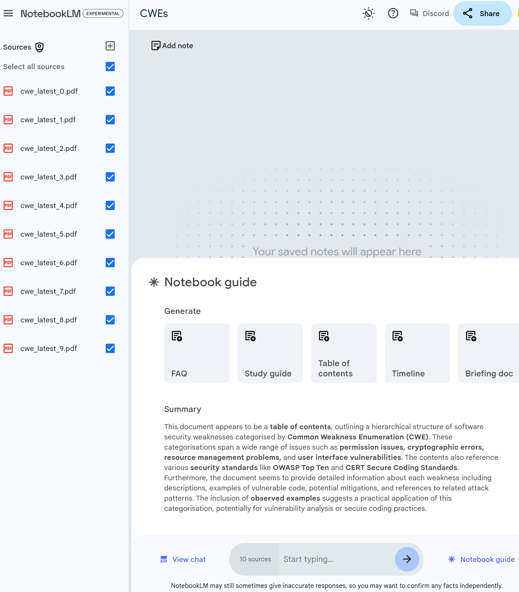
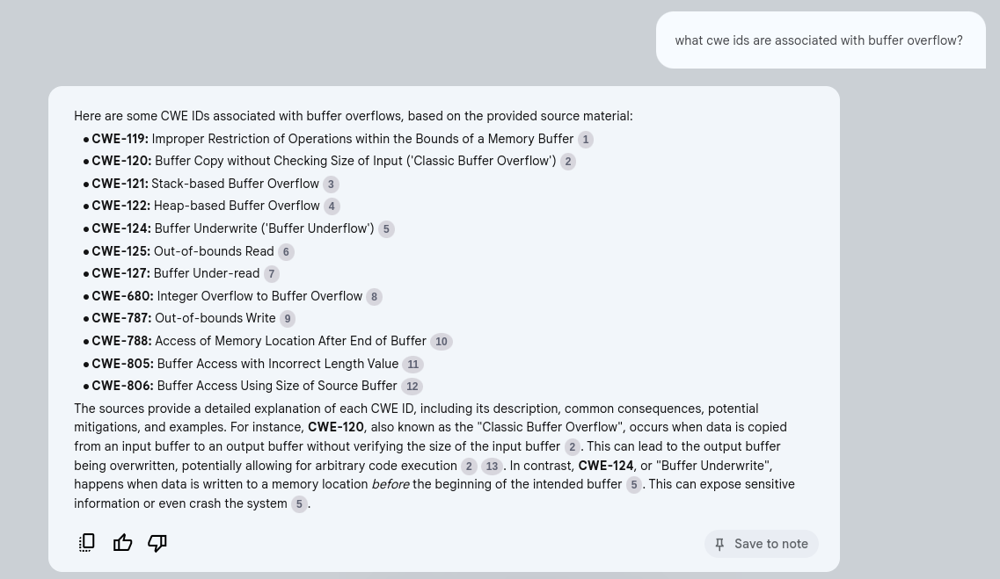
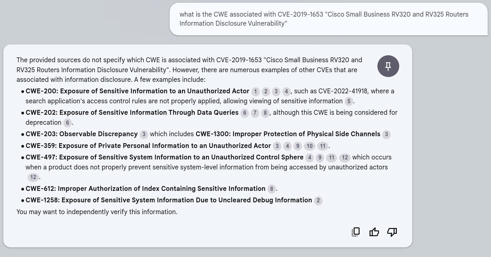

Why Read this Guide?
This guide shows how cybersecurity professionals can get up and running quickly with AI tools.
It's in an initial raw state currently and is largely written by me for me... to organize my play time as I play with, and apply, these tools.
Large Language Models (hosted and open source), and BERT-based language models tools will be covered e.g.
- NotebookML
- Embeddings for CyberSecurity
- BERTopic
- SetFIT + LAGoNN
- Named Entity Recognition GliNER and CyberSecurity NER models
- Prompts and Prompt Techniques applied to Cybersecurity
- AI Agents for orchestrated workflows
Introduction ↵
Introduction¶
About this Guide
This guide is in an initial raw state currently and is largely written by me for me... to organize my play time as I play with, and apply, these tools.
But you might find it useful.
After reading this guide you should be able to
- ....
Overview¶
Intended Audience¶
The intended audience is people wanting to go beyond the hype and basics of Large Language Models.
No prior knowledge is assumed to read the guide - it provides just enough information to understand the advanced topics covered.
A basic knowledge of Jupyter Python is required to run the code (with the data provided or on your data).
How to Use This Guide¶
How to Contribute to This Guide¶
You can contribute content or suggest changes:
Writing Style¶
The "writing style" in this guide is succinct, and leads with an opinion, with data and code to back it up i.e. data analysis plots (with source code where possible) and observations and takeaways that you can assess - and apply to your data and environment. This allows the reader to assess the opinion and the code/data and rationale behind it.
Different, and especially opposite, opinions with the data to back them up, are especially welcome! - and will help shape this guide.
Quote
If we have data, let’s look at data. If all we have are opinions, let’s go with mine.
Notes¶
Notes
- This guide is not affiliated with any Tool/Company/Vendor/Standard/Forum/Data source.
- Mention of a vendor in this guide is not a recommendation or endorsement of that vendor.
- This guide is a living document i.e. it will change and grow over time - with your input.
This guide is not about which tool is better than the other
"Don't fall in love with models: they're expendable. Fall in love with data!"
Julien Simon, Chief Evangelist, Hugging Face
Warning
You are responsible for your data and where it goes.
If you don't understand where your data goes, and what happens to it for a given model or tool, then find out before you use private or personal data.
To evaluate models and tools, you can start with public data.
Ended: Introduction
NotebookML ↵
NotebookML¶
Overview
LLMs change the information retrieval paradigm. Instead of searching for information where we go to the information, we can chat with our documents and ask questions of them, so that the information comes to us in the form of an answer.
In this section, we'll use NotebookLM, and we just need to import our documents to be able to chat with them.
ChatGPT4o is also used for comparison to highlight where one is better applied than the other depending on the context.
- Both tools use LLMs, but NoteBookLM uses a "Closed System" (only the document sources you provide), versus ChatGPT4o which bases it answers on the open internet content at the time it was trained, and adittionally the documents you provide.
NotebookLM¶
Quote
NotebookLM lets you read, take notes, ask questions, organize your ideas, and much more -- all with the power of Google AI helping you at every step of the way.
Quote
It runs on the company’s Gemini 1.5 Pro model, the same AI that powers the Gemini Advanced chatbot. (ref)
Quote
“source-grounded AI”: you define a set of documents that are important to your work—called “sources” in the NotebookLM parlance—and from that point on, you can have an open-ended conversation with the language model where its answers will be “grounded” in the information you’ve selected. It is as if you are giving the AI instant expertise in whatever domain you happen to be working in. (ref)
Tip
Your responses from NotebookLM may be different than the examples shown here. LLMs will give different responses to the same question.
Document Loading¶
Documents are loaded via GoogleDrive, PDFs, Text files, Copied text, Web page URL.
Tip
Any sources can be used e.g. Books in PDF format, websites, text files.
Using a file of site content (if available) e.g.a PDF, is generally more reliable than using a URL to that site; it ensures all the content is ingested.
Closed System¶
These documents become the corpus where information is retrieved from, with references to the document(s) the information was retrieved from.
Quote
“NotebookLM is a closed system.” This means the AI won’t perform any web searches beyond what you, the user, give it in a prompt. Every response it generates pertains only to the information it has on hand. (ref)
Sharing¶
Unlike Google Docs, it is not possible to share a NotebookLM publicly - sharing is done directly via email addresses.
How To Use NotebookLM¶
References¶
- Introducing NotebookLM, Oct 19, 2023, Steven Johnson who contributed to NotebookLM
- Getting The Most Out Of Notes In NotebookLM, Mar 18, 2024, Steven Johnson
- How To Use NotebookLM As A Research Tool, Feb 19, 2024, Steven Johnson
- Google's NotebookLM is now an even smarter assistant and better fact-checker, June 7, 2024
- Using Google’s NotebookLM for Data Science: A Comprehensive Guide, Dec 7, 2023
- How to use Google’s genAI-powered note-taking app, Feb 15, 2024
Takeaways¶
Takeaways
- NotebookML is a powerful free solution from Google that allows users to quickly and easily build a source-grounded AI (where users define the set of documents) and then have an open-ended conversation with the language model where its answers will be “grounded” in the information users selected.
- I found it a useful tool / companion for the research I was doing on vulnerability management to augment my knowledge and capabilities.
NotebookML¶
Overview
In this chapter, we'll feed the main vulnerability standards to NotebookLM.
Data Sources¶
These files are available in docs/NotebookML/InputDocs for convenience.

CISA KEV was then loaded as a text file.
Quote
write an introductory article in less than 250 words that gives an overview of all these sources and how they fit together

Each circled-number is a clickable link to the reference text in the original sources.
I want to rank vulnerabilities by Exploitation¶
Quote
I am currently using CVSS to rank vulnerabilities. I also want to rank based on exploitation as I heard only a small percentage of CVEs are actually exploited. What standard should I use. How should I use them. Provide an answer with rationale and examples.

Explain risk like I'm a 5 year old¶
Quote
I want to prioritize vulnerabilities by risk. But I don't understand risk and the components or factors of risk. Can you explain that to me like I'm a 5 year old. Then explain how I can use that for my risk based prioritization approach. Please provide a rationale

CVSS Base Parameters for CVSS v3 and v4¶
Quote
what parameters contribute to the CVSS base parameter score? How do these parameters differ in CVSS 3 versus CVSS 4

ChatGPT4o Response¶

Failure
Hallucination Remediation Level (RL) is NOT part of the Exploitability Metrics
Quote
Remediation Level (RL): New metric considering how available and effective remediation methods are (Not Defined, Official Fix, Temporary Fix, Workaround, Unavailable).
ChatGPT4o Check Response¶

Takeaways¶
Takeaways
- NotebookLM does a good job assimilating these verbose standards and was competently able to answer specific factual questions, and broader opinionated questions.
- Lots of references to the source material were provided in the answers which help understand and validate the answers.
NotebookML¶
Overview
In this chapter, we'll use NotebookLM to ingest the Common Weakness Enumeration (CWE) list.
- In the current version (CWE Version 4.14 2024-02-29 as at June 2024), there are over 1400 CWEs, and 2789 pages in the PDF version of the list.
- It can be unwieldy to navigate or assimilate this information.
Using NotebookML, we can chat with the CWE document and ask questions, so that the information comes to us in the form of an answer.
For comparison, we will also ask some of the same questions of ChatGPT4o covering 2 cases:
- without uploading any documents to it.
- uploading a document to it.
Data Sources¶
cwe_latest.pdf from https://cwe.mitre.org/data/downloads.html has 2789 pages (version CWE Version 4.14 2024-02-29).
- This is too big for NotebookML to ingest.
- So the PDF is split into 10 smaller PDFs of 280 pages each using this script.
- These 10 smaller PDFs are then ingested into NotebookLM.

what cwe ids are associated with buffer overflow?¶

ChatGPT4o Answer¶
ChatGPT4o did not provide all the CWEs that NotebookLM did.

ChatGPT4o Answer with uploaded CWE document¶
ChatGPT4o required some additional prompting to provide a comparable list of CWEs to what NotebookLM gave.

what cwe ids are associated with xss?¶

what is the parent weakness or cwe for xss and csrf?¶

what are the different types of xss?¶
ChatGPT4o Answer¶
ChatGPT4o provided the same types - but gave a much richer answer than NotebookLM did because it has access to a lot more documents on XSS.
what is the CWE associated with CVE-2021-27104 "Accellion FTA OS Command Injection Vulnerability"¶


what is the CWE associated with CVE-2019-1653 "Cisco Small Business RV320 and RV325 Routers Information Disclosure Vulnerability"¶

ChatGPT4o Answer¶
ChatGPT4o provided the same types - but gave a much richer answer than NotebookLM did because it has access to a lot more documents on XSS.

Takeaways¶
Takeaways
- I found it useful, quick, and convenient to be able to ask questions of the CWE list, as a compliment to the traditional search method I've used in the past.
- The large CWE document could not be uploaded to NoteBookLM as one PDF document, but had to be split into smaller PDFs.
- The same document could be uploaded to ChatGPT4o.
- Based on the extremely limited test cases here (your experience may vary):
- NoteBookAI provides better answers on the provided source documents.
- ChatGPT provides richer answers to questions that can be answered outside of the provided source documents (based on the extremely limited test cases here!).
NotebookML¶
Overview
In this chapter, we'll use NotebookLM to ingest the Common Attack Pattern Enumeration and Classification (CAPEC) list.
- In the current version (CAPEC List Version 3.9 as at June 2024), there are 559 Total Attack Patterns.
- It can be unwieldy to navigate or assimilate this information.
Using NotebookML, we can chat with the CAPEC document and ask questions, so that the information comes to us in the form of an answer.
For comparison, we will also ask some of the same questions of ChatGPT4o covering 2 cases:
- without uploading any documents to it.
- uploading a document to it.
Note that CAPEC appears a lot less than CWE on the internet so an LLM will have a lot less context for CAPEC.
Data Sources¶
https://capec.mitre.org/data/downloads.html offers various formats (XML, CSV, HTML), and views:
- Mechanisms of Attack: https://capec.mitre.org/data/slices/1000.html
- Domains of Attack: https://capec.mitre.org/data/slices/3000.html
- We'll use this one.
NotebookML - Upload from - Web page URL - Paste website link - https://capec.mitre.org/data/slices/3000.html
what is the CAPEC ID that related to xss¶

ChatGPT4o Answer¶
ChatGPT4o did not provide all the CWEs that NotebookLM did.

ChatGPT4o Answer with Hallucination¶

Failure
Hallucination
"CAPEC-633: Client-Side XSS using Content-Security-Policy Bypass" is not valid https://capec.mitre.org/data/definitions/633.html
ChatGPT4o Answer with Hallucination with Uploaded CAPEC File¶
ChatGPT4o UI did not process the CAPEC HTML file, and the UI does not accept URLs, so the CSV file was uploaded instead.

ChatGPT4o Validate the Hallucination¶
In a different ChatGPT4o session (new context to avoid the hallucination), we ask ChatGPT4o to validate the CAPEC.

ChatGPT4o Review and Rate the Responses from NotebookLM and ChatGPT4o¶
ChatGPT4o was used to review and rate both responses (copied directly from the NoteBookLM and ChatGPT4o responses)

Takeaways¶
Takeaways
- For less common or referenced text like CAPEC, ChatGPT4o can hallucinate even when the CAPEC list is uploaded to it.
- NotebookLM did not hallucinate (a benefit of the "Closed System" approach).
NotebookML¶
Overview
I came across this via https://tldrsec.com/p/tldr-sec-237 (an excellent newsletter) in the "AI + Security" section, and it piqued my interest!
One area of research is using LLMs for infrastructure configuration as detailed in https://www.coguard.io/post/coguard-uses-openai-cybersecurity-grant-to-automate-infrastructure-security and the associated repo.
Here we take on the first task [C1]: Extraction of security and uptime-relevant configuration parameters from manuals; for the example provided in the repo: Apache Spark
Details¶
Task¶
Quote
[C1] Extraction of security and uptime-relevant configuration parameters from manuals. The goal of this component is simple to describe, but hard to accomplish. Given a manual for a software component, extract the configuration parameters and define the security relevant ones from it.
Example: For Apache Spark, the manual is provided on the general configuration page online, i.e. in HTML format, and there is also a specific security page. The expectation would be to at least extract the parameters from the security page, as well as some log-related items from the general page. In total, when manually examining the configuration parameters, it totals approximately 80 parameters that are security relevant. You can find these in the Appendix A.
Original Prompt¶
The original prompt used is per https://github.com/coguardio/coguard_openai_rule_auto_generation_research/tree/master?tab=readme-ov-file#extraction-of-security-relevant-parameters-in-c1
Quote
You are an assistant that is a cybersecurity expert and knows their configuration files. Your response here should be a JSON list of strings Using the documentation of Apache Spark, which configuration parameters are relevant from a security perspective?.
Expected Answer¶
The expected answer is per https://github.com/coguardio/coguard_openai_rule_auto_generation_research/tree/master?tab=readme-ov-file#appendix-a.
Quote
The following parameters were identified by the CoGuard team by hand as relevant from a security point of view.
spark.yarn.shuffle.server.recovery.disabled
spark.authenticate
spark.authenticate.secret
spark.authenticate.secret.file
spark.authenticate.secret.driver.file
spark.authenticate.secret.executor.file
spark.network.crypto.enabled
spark.network.crypto.config.*
spark.network.crypto.saslFallback
spark.authenticate.enableSaslEncryption
spark.network.sasl.serverAlwaysEncrypt
spark.io.encryption.enabled
spark.io.encryption.keySizeBits
spark.io.encryption.keygen.algorithm
spark.io.encryption.commons.config.*
spark.ui.allowFramingFrom
spark.ui.filters
spark.acls.enable
spark.admin.acls
spark.admin.acls.groups
spark.modify.acls
spark.modify.acls.groups
spark.ui.view.acls
spark.ui.view.acls.groups
spark.user.groups.mapping
spark.history.ui.acls.enable
spark.history.ui.admin.acls
spark.history.ui.admin.acls.groups
spark.ssl.enabled
spark.ssl.port
spark.ssl.enabledAlgorithms
spark.ssl.keyPassword
spark.ssl.keyStore
spark.ssl.keyStorePassword
spark.ssl.keyStoreType
spark.ssl.protocol
spark.ssl.needClientAuth
spark.ssl.trustStore
spark.ssl.trustStorePassword
spark.ssl.trustStoreType
spark.ssl.ui.enabled
spark.ssl.ui.port
spark.ssl.ui.enabledAlgorithms
spark.ssl.ui.keyPassword
spark.ssl.ui.keyStore
spark.ssl.ui.keyStorePassword
spark.ssl.ui.keyStoreType
spark.ssl.ui.protocol
spark.ssl.ui.needClientAuth
spark.ssl.ui.trustStore
spark.ssl.ui.trustStorePassword
spark.ssl.ui.trustStoreType
spark.ssl.standalone.enabled
spark.ssl.standalone.port
spark.ssl.standalone.enabledAlgorithms
spark.ssl.standalone.keyPassword
spark.ssl.standalone.keyStore
spark.ssl.standalone.keyStorePassword
spark.ssl.standalone.keyStoreType
spark.ssl.standalone.protocol
spark.ssl.standalone.needClientAuth
spark.ssl.standalone.trustStore
spark.ssl.standalone.trustStorePassword
spark.ssl.standalone.trustStoreType
spark.ssl.historyServer.enabled
spark.ssl.historyServer.port
spark.ssl.historyServer.enabledAlgorithms
spark.ssl.historyServer.keyPassword
spark.ssl.historyServer.keyStore
spark.ssl.historyServer.keyStorePassword
spark.ssl.historyServer.keyStoreType
spark.ssl.historyServer.protocol
spark.ssl.historyServer.needClientAuth
spark.ssl.historyServer.trustStore
spark.ssl.historyServer.trustStorePassword
spark.ssl.historyServer.trustStoreType
spark.ui.xXssProtection
spark.ui.xContentTypeOptions.enabled
spark.ui.strictTransportSecurity
Data Sources¶
The data sources are per above:
- https://spark.apache.org/docs/latest/configuration.html
- https://spark.apache.org/docs/latest/security.html
Setup¶
Prepare Validation File¶
- CopyNPaste the Expected answer to a text file ./data/NotebookML_Config/security_parameters_manual.txt.
- Sort alphabetically to allow diff comparison with answer from NotebookLM.
cat ./data/NotebookML_Config/security_parameters_manual.txt | sort > ./data/NotebookML_Config/security_parameters_manual_sorted.txt
Attempt 1: Use the Provided Prompt¶
Create A New Notebooklm With The 2 Data Sources Only¶
New NotebookLM. Sources - Upload from - Web page URL for the 2 Data Sources listed above.

Submit the prompt¶
Quote
You are an assistant that is a cybersecurity expert and knows their configuration files. Your response here should be a JSON list of strings Using the documentation of Apache Spark, which configuration parameters are relevant from a security perspective?.
Save The Result¶
- Click the Copy button.
- Create a new file security_parameters.json and save the result, then remove the ```` part at the beginning and end of the file so the file contains JSON only.
- Sort the answer
jq -r '.[]' ./data/NotebookML_Config/security_parameters.json | sort > ./data/NotebookML_Config/security_parameters.txt
Compare The Answer With The Expected Answer¶
- 60 parameters were retrieved
- We can see that the main difference relates to "spark.ssl." parameters.
- Searching manually in the 2 Data Sources above reveals that these config strings are not actually listed in the documentation e.g. "spark.ssl.ui.needClientAuth" directly - but using placeholders.
- The LLM didn't understand that - so we'll let it know - then ask it again.
- diff data/NotebookML_Config/security_parameters_manual.txt data/NotebookML_Config/security_parameters.txt
diff data/NotebookML_Config/security_parameters_manual.txt data/NotebookML_Config/security_parameters.txt
1c1,4
< spark.yarn.shuffle.server.recovery.disabled
---
> hadoop.security.credential.provider.path
> spark.acls.enable
> spark.admin.acls
> spark.admin.acls.groups
2a6
> spark.authenticate.enableSaslEncryption
4d7
< spark.authenticate.secret.file
7,11c10,14
< spark.network.crypto.enabled
< spark.network.crypto.config.*
< spark.network.crypto.saslFallback
< spark.authenticate.enableSaslEncryption
< spark.network.sasl.serverAlwaysEncrypt
---
> spark.authenticate.secret.file
> spark.history.ui.acls.enable
> spark.history.ui.admin.acls
> spark.history.ui.admin.acls.groups
> spark.io.encryption.commons.config.*
15,20c18,29
< spark.io.encryption.commons.config.*
< spark.ui.allowFramingFrom
< spark.ui.filters
< spark.acls.enable
< spark.admin.acls
< spark.admin.acls.groups
---
> spark.kerberos.access.hadoopFileSystems
> spark.kerberos.keytab
> spark.kerberos.principal
> spark.kubernetes.hadoop.configMapName
> spark.kubernetes.kerberos.krb5.configMapName
> spark.kubernetes.kerberos.krb5.path
> spark.kubernetes.kerberos.tokenSecret.itemKey
> spark.kubernetes.kerberos.tokenSecret.name
> spark.mesos.driver.secret.envkeys
> spark.mesos.driver.secret.filenames
> spark.mesos.driver.secret.names
> spark.mesos.driver.secret.values
23,28c32,39
< spark.ui.view.acls
< spark.ui.view.acls.groups
< spark.user.groups.mapping
< spark.history.ui.acls.enable
< spark.history.ui.admin.acls
< spark.history.ui.admin.acls.groups
---
> spark.network.crypto.config.*
> spark.network.crypto.enabled
> spark.network.crypto.saslFallback
> spark.network.sasl.serverAlwaysEncrypt
> spark.redaction.regex
> spark.redaction.string.regex
> spark.security.credentials.${service}.enabled
> spark.sql.redaction.options.regex
30d40
< spark.ssl.port
36d45
< spark.ssl.protocol
37a47,48
> spark.ssl.port
> spark.ssl.protocol
41,77c52,57
< spark.ssl.ui.enabled
< spark.ssl.ui.port
< spark.ssl.ui.enabledAlgorithms
< spark.ssl.ui.keyPassword
< spark.ssl.ui.keyStore
< spark.ssl.ui.keyStorePassword
< spark.ssl.ui.keyStoreType
< spark.ssl.ui.protocol
< spark.ssl.ui.needClientAuth
< spark.ssl.ui.trustStore
< spark.ssl.ui.trustStorePassword
< spark.ssl.ui.trustStoreType
< spark.ssl.standalone.enabled
< spark.ssl.standalone.port
< spark.ssl.standalone.enabledAlgorithms
< spark.ssl.standalone.keyPassword
< spark.ssl.standalone.keyStore
< spark.ssl.standalone.keyStorePassword
< spark.ssl.standalone.keyStoreType
< spark.ssl.standalone.protocol
< spark.ssl.standalone.needClientAuth
< spark.ssl.standalone.trustStore
< spark.ssl.standalone.trustStorePassword
< spark.ssl.standalone.trustStoreType
< spark.ssl.historyServer.enabled
< spark.ssl.historyServer.port
< spark.ssl.historyServer.enabledAlgorithms
< spark.ssl.historyServer.keyPassword
< spark.ssl.historyServer.keyStore
< spark.ssl.historyServer.keyStorePassword
< spark.ssl.historyServer.keyStoreType
< spark.ssl.historyServer.protocol
< spark.ssl.historyServer.needClientAuth
< spark.ssl.historyServer.trustStore
< spark.ssl.historyServer.trustStorePassword
< spark.ssl.historyServer.trustStoreType
< spark.ui.xXssProtection
---
> spark.ssl.useNodeLocalConf
> spark.ui.allowFramingFrom
> spark.ui.filters
> spark.ui.strictTransportSecurity
> spark.ui.view.acls
> spark.ui.view.acls.groups
79c59,60
< spark.ui.strictTransportSecurity
\ No newline at end of file
---
> spark.ui.xXssProtection
> spark.user.groups.mapping
Note
In the next section, we'll use an LLM to do the comparison.
Here we used traditional methods i.e. diff.
Attempt 2: Explain about Config Namespace Placeholders¶
The LLM did not understand from the documents about Config Namespace placeholders:

So this time, we explain as part of the prompt about Config Namespace placeholders.
Submit The Prompt¶
Quote
Note that Config Namespace placeholders are used for some security configurations. These are placeholders "\({ns}" that can take values listed under Config Namespace. For these security configurations placeholders list all possible security configurations for each Config Namespace e.g. For Property Name: "\).enabled", "spark.ssl.enabled" and "spark.ssl.historyServer" would be some possible configurations now that you understand namespace placeholders, list all the configuration parameters that are relevant from a security perspective replacing all placeholders with possible config namespace values. Your response here should be a JSON list of strings only. list the configuration parameters that are relevant from a security perspective replacing all placeholders with possible config namespace values and repeated patterns
Note
Note the duplication in the prompt to emphasize what we want
Quote
"list the configuration parameters that are relevant from a security perspective replacing all placeholders with possible config namespace values and repeated patterns" in the prompt.
security_parameters_ns.json is the resulting file that has 96 config parameters - more than the expected answer config parameters as generated by humans.
Save The Result¶
- Click the Copy button.
- Create a new file security_parameters_ns.json and save the result, then remove the ```` part at the beginning and end of the file so the file contains JSON only.
- Sort the answer and ensure there's no duplicates.
jq -r '.[]' ./data/NotebookML_Config/security_parameters_ns.json | sort | uniq > ./data/NotebookML_Config/security_parameters_ns.txt
Compare The Answer With The Expected Answer¶
In this case, we use ChatGPT4o to do the diff, copy and pasting the values from each file:
- ./data/NotebookML_Config/security_parameters_manual.txt: the expected answers
- ./data/NotebookML_Config/security_parameters_ns.txt: the actual answers
Prompt¶
List the values that are in ===manual=== but not in ===notebookml===
List the values that are in ===notebookml=== but not in ===manual===
===manual===
spark.yarn.shuffle.server.recovery.disabled
spark.authenticate
spark.authenticate.secret
spark.authenticate.secret.file
spark.authenticate.secret.driver.file
spark.authenticate.secret.executor.file
spark.network.crypto.enabled
spark.network.crypto.config.*
spark.network.crypto.saslFallback
spark.authenticate.enableSaslEncryption
spark.network.sasl.serverAlwaysEncrypt
spark.io.encryption.enabled
spark.io.encryption.keySizeBits
spark.io.encryption.keygen.algorithm
spark.io.encryption.commons.config.*
spark.ui.allowFramingFrom
spark.ui.filters
spark.acls.enable
spark.admin.acls
spark.admin.acls.groups
spark.modify.acls
spark.modify.acls.groups
spark.ui.view.acls
spark.ui.view.acls.groups
spark.user.groups.mapping
spark.history.ui.acls.enable
spark.history.ui.admin.acls
spark.history.ui.admin.acls.groups
spark.ssl.enabled
spark.ssl.port
spark.ssl.enabledAlgorithms
spark.ssl.keyPassword
spark.ssl.keyStore
spark.ssl.keyStorePassword
spark.ssl.keyStoreType
spark.ssl.protocol
spark.ssl.needClientAuth
spark.ssl.trustStore
spark.ssl.trustStorePassword
spark.ssl.trustStoreType
spark.ssl.ui.enabled
spark.ssl.ui.port
spark.ssl.ui.enabledAlgorithms
spark.ssl.ui.keyPassword
spark.ssl.ui.keyStore
spark.ssl.ui.keyStorePassword
spark.ssl.ui.keyStoreType
spark.ssl.ui.protocol
spark.ssl.ui.needClientAuth
spark.ssl.ui.trustStore
spark.ssl.ui.trustStorePassword
spark.ssl.ui.trustStoreType
spark.ssl.standalone.enabled
spark.ssl.standalone.port
spark.ssl.standalone.enabledAlgorithms
spark.ssl.standalone.keyPassword
spark.ssl.standalone.keyStore
spark.ssl.standalone.keyStorePassword
spark.ssl.standalone.keyStoreType
spark.ssl.standalone.protocol
spark.ssl.standalone.needClientAuth
spark.ssl.standalone.trustStore
spark.ssl.standalone.trustStorePassword
spark.ssl.standalone.trustStoreType
spark.ssl.historyServer.enabled
spark.ssl.historyServer.port
spark.ssl.historyServer.enabledAlgorithms
spark.ssl.historyServer.keyPassword
spark.ssl.historyServer.keyStore
spark.ssl.historyServer.keyStorePassword
spark.ssl.historyServer.keyStoreType
spark.ssl.historyServer.protocol
spark.ssl.historyServer.needClientAuth
spark.ssl.historyServer.trustStore
spark.ssl.historyServer.trustStorePassword
spark.ssl.historyServer.trustStoreType
spark.ui.xXssProtection
spark.ui.xContentTypeOptions.enabled
spark.ui.strictTransportSecurity
===notebookml===
hadoop.security.credential.provider.path
spark.acls.enable
spark.admin.acls
spark.admin.acls.groups
spark.authenticate
spark.authenticate.enableSaslEncryption
spark.authenticate.secret
spark.authenticate.secret.driver.file
spark.authenticate.secret.executor.file
spark.authenticate.secret.file
spark.history.ui.acls.enable
spark.history.ui.admin.acls
spark.history.ui.admin.acls.groups
spark.io.encryption.commons.config.*
spark.io.encryption.enabled
spark.io.encryption.keySizeBits
spark.io.encryption.keygen.algorithm
spark.kerberos.access.hadoopFileSystems
spark.kerberos.keytab
spark.kerberos.principal
spark.kubernetes.hadoop.configMapName
spark.kubernetes.kerberos.krb5.configMapName
spark.kubernetes.kerberos.krb5.path
spark.kubernetes.kerberos.tokenSecret.itemKey
spark.kubernetes.kerberos.tokenSecret.name
spark.mesos.driver.secret.envkeys
spark.mesos.driver.secret.filenames
spark.mesos.driver.secret.names
spark.mesos.driver.secret.values
spark.modify.acls
spark.modify.acls.groups
spark.network.crypto.config.*
spark.network.crypto.enabled
spark.network.crypto.saslFallback
spark.network.sasl.serverAlwaysEncrypt
spark.redaction.regex
spark.redaction.string.regex
spark.security.credentials.${service}.enabled
spark.sql.redaction.options.regex
spark.ssl.enabled
spark.ssl.enabledAlgorithms
spark.ssl.historyServer.enabled
spark.ssl.historyServer.enabledAlgorithms
spark.ssl.historyServer.keyPassword
spark.ssl.historyServer.keyStore
spark.ssl.historyServer.keyStorePassword
spark.ssl.historyServer.keyStoreType
spark.ssl.historyServer.needClientAuth
spark.ssl.historyServer.port
spark.ssl.historyServer.protocol
spark.ssl.historyServer.trustStore
spark.ssl.historyServer.trustStorePassword
spark.ssl.historyServer.trustStoreType
spark.ssl.keyPassword
spark.ssl.keyStore
spark.ssl.keyStorePassword
spark.ssl.keyStoreType
spark.ssl.needClientAuth
spark.ssl.port
spark.ssl.protocol
spark.ssl.standalone.enabled
spark.ssl.standalone.enabledAlgorithms
spark.ssl.standalone.keyPassword
spark.ssl.standalone.keyStore
spark.ssl.standalone.keyStorePassword
spark.ssl.standalone.keyStoreType
spark.ssl.standalone.needClientAuth
spark.ssl.standalone.port
spark.ssl.standalone.protocol
spark.ssl.standalone.trustStore
spark.ssl.standalone.trustStorePassword
spark.ssl.standalone.trustStoreType
spark.ssl.trustStore
spark.ssl.trustStorePassword
spark.ssl.trustStoreType
spark.ssl.ui.enabled
spark.ssl.ui.enabledAlgorithms
spark.ssl.ui.keyPassword
spark.ssl.ui.keyStore
spark.ssl.ui.keyStorePassword
spark.ssl.ui.keyStoreType
spark.ssl.ui.needClientAuth
spark.ssl.ui.port
spark.ssl.ui.protocol
spark.ssl.ui.trustStore
spark.ssl.ui.trustStorePassword
spark.ssl.ui.trustStoreType
spark.ssl.useNodeLocalConf
spark.ui.allowFramingFrom
spark.ui.filters
spark.ui.strictTransportSecurity
spark.ui.view.acls
spark.ui.view.acls.groups
spark.ui.xContentTypeOptions.enabled
spark.ui.xXssProtection
spark.user.groups.mapping
Response¶

Values in ===manual=== but not in ===notebookml===
spark.yarn.shuffle.server.recovery.disabled
Values in ===notebookml=== but not in ===manual===
hadoop.security.credential.provider.path
spark.kerberos.access.hadoopFileSystems
spark.kerberos.keytab
spark.kerberos.principal
spark.kubernetes.hadoop.configMapName
spark.kubernetes.kerberos.krb5.configMapName
spark.kubernetes.kerberos.krb5.path
spark.kubernetes.kerberos.tokenSecret.itemKey
spark.kubernetes.kerberos.tokenSecret.name
spark.mesos.driver.secret.envkeys
spark.mesos.driver.secret.filenames
spark.mesos.driver.secret.names
spark.mesos.driver.secret.values
spark.redaction.regex
spark.redaction.string.regex
spark.security.credentials.${service}.enabled
spark.sql.redaction.options.regex
spark.ssl.useNodeLocalConf
Observation
- NotebookML did not understand the concept of placeholder config parameters from the source documents. Since there are several config parameters per placeholder, it missed many config parameters (Attempt 1).
- When the prompt explained about placeholder config parameters, NotebookLM found all but 1 of the 79 configuration parameters related to security (Attempt 2).
- NotebookML found 18 config parameters related to security that were not found by humans as part of the expected answers and these appear to be valid configuration parameters related to security based on my review.
- 1 config parameter was not found by NotebookML, and it's not obvious why:
spark.yarn.shuffle.server.recovery.disabled
ChatGPT4o¶
Original Prompt¶
You are an assistant that is a cybersecurity expert and knows their configuration files. Your response here should be a JSON list of strings
Using only the documentation of Apache Spark from the URLs below (and no other source), which configuration parameters are relevant from a security perspective?
The data sources are :
1. https://spark.apache.org/docs/latest/configuration.html
2. https://spark.apache.org/docs/latest/security.html
[
"spark.authenticate",
"spark.authenticate.secret",
"spark.authenticate.secret.file",
"spark.authenticate.secret.driver.file",
"spark.authenticate.secret.executor.file",
"spark.network.crypto.enabled",
"spark.network.crypto.config.*",
"spark.network.crypto.saslFallback",
"spark.authenticate.enableSaslEncryption",
"spark.network.sasl.serverAlwaysEncrypt",
"spark.io.encryption.enabled",
"spark.io.encryption.keySizeBits",
"spark.io.encryption.keygen.algorithm",
"spark.io.encryption.commons.config.*",
"spark.ui.allowFramingFrom",
"spark.ui.filters",
"spark.acls.enable",
"spark.admin.acls",
"spark.admin.acls.groups",
"spark.modify.acls",
"spark.modify.acls.groups",
"spark.ui.view.acls",
"spark.ui.view.acls.groups",
"spark.user.groups.mapping",
"spark.history.ui.acls.enable",
"spark.history.ui.admin.acls",
"spark.history.ui.admin.acls.groups",
"spark.ssl.enabled",
"spark.ssl.port",
"spark.ssl.enabledAlgorithms",
"spark.ssl.keyPassword",
"spark.ssl.keyStore",
"spark.ssl.keyStorePassword",
"spark.ssl.keyStoreType",
"spark.ssl.protocol",
"spark.ssl.needClientAuth",
"spark.ssl.trustStore",
"spark.ssl.trustStorePassword",
"spark.ssl.trustStoreType",
"spark.ui.xXssProtection",
"spark.ui.xContentTypeOptions.enabled",
"spark.ui.strictTransportSecurity",
"spark.kerberos.access.hadoopFileSystems",
"spark.security.credentials.${service}.enabled"
]
Prompt Explaining Config Namespace placeholders¶
Note that Config Namespace placeholders are used for some security configurations. These are placeholders "${ns}" that can take values listed under Config Namespace. For these security configurations placeholders list all possible security configurations for each Config Namespace e.g. For Property Name: "${ns}.enabled", "spark.ssl.enabled" and "spark.ssl.historyServer" would be some possible configurations now that you understand namespace placeholders, list all the configuration parameters that are relevant from a security perspective replacing all placeholders with possible config namespace values. Your response here should be a JSON list of strings only. list the configuration parameters that are relevant from a security perspective replacing all placeholders with possible config namespace values and repeated patterns
[
"spark.ssl.enabled",
"spark.ssl.historyServer.enabled",
"spark.security.credentials.enabled",
"spark.ssl.port",
"spark.ssl.historyServer.port",
"spark.security.credentials.port",
"spark.ssl.enabledAlgorithms",
"spark.ssl.historyServer.enabledAlgorithms",
"spark.security.credentials.enabledAlgorithms",
"spark.ssl.keyPassword",
"spark.ssl.historyServer.keyPassword",
"spark.security.credentials.keyPassword",
"spark.ssl.keyStore",
"spark.ssl.historyServer.keyStore",
"spark.security.credentials.keyStore",
"spark.ssl.keyStorePassword",
"spark.ssl.historyServer.keyStorePassword",
"spark.security.credentials.keyStorePassword",
"spark.ssl.keyStoreType",
"spark.ssl.historyServer.keyStoreType",
"spark.security.credentials.keyStoreType",
"spark.ssl.protocol",
"spark.ssl.historyServer.protocol",
"spark.security.credentials.protocol",
"spark.ssl.needClientAuth",
"spark.ssl.historyServer.needClientAuth",
"spark.security.credentials.needClientAuth",
"spark.ssl.trustStore",
"spark.ssl.historyServer.trustStore",
"spark.security.credentials.trustStore",
"spark.ssl.trustStorePassword",
"spark.ssl.historyServer.trustStorePassword",
"spark.security.credentials.trustStorePassword",
"spark.ssl.trustStoreType",
"spark.ssl.historyServer.trustStoreType",
"spark.security.credentials.trustStoreType",
"spark.ssl.historyServer",
"spark.ssl.historyServer.historyServer",
"spark.security.credentials.historyServer",
"spark.authenticate",
"spark.authenticate.secret",
"spark.authenticate.secret.file",
"spark.authenticate.secret.driver.file",
"spark.authenticate.secret.executor.file",
"spark.network.crypto.enabled",
"spark.network.crypto.config.*",
"spark.network.crypto.saslFallback",
"spark.authenticate.enableSaslEncryption",
"spark.network.sasl.serverAlwaysEncrypt",
"spark.io.encryption.enabled",
"spark.io.encryption.keySizeBits",
"spark.io.encryption.keygen.algorithm",
"spark.io.encryption.commons.config.*",
"spark.ui.allowFramingFrom",
"spark.ui.filters",
"spark.acls.enable",
"spark.admin.acls",
"spark.admin.acls.groups",
"spark.modify.acls",
"spark.modify.acls.groups",
"spark.ui.view.acls",
"spark.ui.view.acls.groups",
"spark.user.groups.mapping",
"spark.history.ui.acls.enable",
"spark.history.ui.admin.acls",
"spark.history.ui.admin.acls.groups",
"spark.ui.xXssProtection",
"spark.ui.xContentTypeOptions.enabled",
"spark.ui.strictTransportSecurity",
"spark.kerberos.access.hadoopFileSystems",
"spark.security.credentials.${service}.enabled"
]
``` ​:citation[oaicite:0]{index=0}​
Compare The Answer With The Expected Answer¶
- ChatGPT4o missed these 2 config placeholders (these were not provided in the example in the prompt - only the first and last one were provided)
- spark.ssl.ui
- spark.ssl.standalone
- ChatGPT4o wrongly interpreted spark.security.credentials.${service}.enabled as being the same as ${ns} placeholder, and appended the parameters for ${ns} placeholder to spark.security.credentials.
{
"manual_not_in_chatgpt4o": [
"spark.yarn.shuffle.server.recovery.disabled",
"spark.ssl.ui.enabled",
"spark.ssl.ui.port",
"spark.ssl.ui.enabledAlgorithms",
"spark.ssl.ui.keyPassword",
"spark.ssl.ui.keyStore",
"spark.ssl.ui.keyStorePassword",
"spark.ssl.ui.keyStoreType",
"spark.ssl.ui.protocol",
"spark.ssl.ui.needClientAuth",
"spark.ssl.ui.trustStore",
"spark.ssl.ui.trustStorePassword",
"spark.ssl.ui.trustStoreType",
"spark.ssl.standalone.enabled",
"spark.ssl.standalone.port",
"spark.ssl.standalone.enabledAlgorithms",
"spark.ssl.standalone.keyPassword",
"spark.ssl.standalone.keyStore",
"spark.ssl.standalone.keyStorePassword",
"spark.ssl.standalone.keyStoreType",
"spark.ssl.standalone.protocol",
"spark.ssl.standalone.needClientAuth",
"spark.ssl.standalone.trustStore",
"spark.ssl.standalone.trustStorePassword",
"spark.ssl.standalone.trustStoreType"
],
"chatgpt4o_not_in_manual": [
"spark.security.credentials.enabled",
"spark.security.credentials.port",
"spark.security.credentials.enabledAlgorithms",
"spark.security.credentials.keyPassword",
"spark.security.credentials.keyStore",
"spark.security.credentials.keyStorePassword",
"spark.security.credentials.keyStoreType",
"spark.security.credentials.protocol",
"spark.security.credentials.needClientAuth",
"spark.security.credentials.trustStore",
"spark.security.credentials.trustStorePassword",
"spark.security.credentials.trustStoreType",
"spark.security.credentials.historyServer",
"spark.security.credentials.${service}.enabled"
]
}
Observation
spark.yarn.shuffle.server.recovery.disabledwas not found by ChatGPT4o (or NotebookML).- ChatGPT4o found 44 parameters in the first prompt.
- When the concept of placeholder config parameters was explained in the second prompt, ChatGPT made 2 mistakes and thereby got many config parameters wrong
- it did not extend the example to all the placeholder config parameters
- it appended the {ns} placeholder parameters to a different placeholder {service}
Takeaways¶
Takeaways
- NotebookML and ChatGPT4o did reasonably well at extracting the config parameters related to security - with NotebookML performing better, missing just 1, and finding 18 more than the human-generated answer.
- Overall, with everything-as-code (infrastructure, policy, LLM answers, ....), and LLMs being able to process code, there's a lot of benefit and promise in applying LLMs.
- The feedback to CoGuard is via https://github.com/coguardio/coguard_openai_rule_auto_generation_research/issues/2
Ended: NotebookML
Prompting ↵
Prompt Engineering¶
Overview
A large part of working LLMs is knowing how to prompt them to get the information you want.
ChatGPTo will be used here but the techniques apply in general to any LLM.
Prompt Guides¶
There are many books, guides, and articles on Prompt Engineering. Some of the better ones are listed here:
- Prompt Engineering Guide
- OpenAI Prompt Engineering Guide
- Best practices for prompt Engineering with the OpenAI API
- Google Gemini Prompting guide 101 - A quick-start handbook for effective prompts, April 2024 edition
- How I Won Singapore’s GPT-4 Prompt Engineering Competition, Dec 2023
- Prompt Engineering for Generative AI Book, May 2024
- Google Prompt design strategies
- Anthropic Prompt Engineering overview
Useful Prompt Tactics¶
Some tactics I find particularly useful:
- Ask the LLM to generate the prompt.
- Do this in 2 parts (task decomposition, )
- Ask the LLM what techniques are best to use for effective prompt engineering
- Ask the LLM to create a prompt using these techniques for the objective and example you specify
- Do this in 2 parts (task decomposition, )
- Ask the LLM to provide a confidence score for their answer.
- People can be fooled by the fluency of LLMs aka hallucinations
- LLMs know how confident they are in their answer.
- So asking an LLM to rate their confidence in the answer can reduce blind trust.
- Ask the LLM (or a different LLM) to review the answer and provide improvements.
Ask the LLM to generate the prompt¶
Ask the LLM what techniques are best to use for effective prompt engineering?¶


Ask the LLM to create a prompt using these techniques for the objective and example you specify¶
_functions.php in cpCommerce 1.2.x, possibly including 1.2.9, sends a redirect but does not exit when it is called directly, which allows remote attackers to bypass a protection mechanism to conduct remote file inclusion and directory traversal attacks, execute arbitrary PHP code, or read arbitrary files via the GLOBALS[prefix] parameter, a different vector than CVE-2003-1500.
#CVE# _functions.php in cpCommerce 1.2.x, possibly including 1.2.9, sends a redirect but does not exit when it is called directly, which allows remote attackers to bypass a protection mechanism to conduct remote file inclusion and directory traversal attacks, execute arbitrary PHP code, or read arbitrary files via the GLOBALS[prefix] parameter, a different vector than CVE-2003-1500.
#IMPACT# Remote Code Execution, Information Disclosure, Security Bypass
#RATIONALE# The description specifies multiple potential impacts:
1. **Remote Code Execution**: The ability to "execute arbitrary PHP code" directly implies a high severity impact where an attacker can run malicious code on the affected system.
2. **Information Disclosure**: The mention of "read arbitrary files" suggests that attackers can access sensitive information stored in files.
3. **Security Bypass**: The bypass of a protection mechanism to conduct remote file inclusion and directory traversal attacks implies that security controls are being circumvented.
#CONFIDENCE# 95

Ask the LLM to review the answer and provide improvements.¶

Fabric Prompt Collection and Framework¶
https://github.com/danielmiessler/fabric/tree/main
Quote
Since the start of 2023 and GenAI we've seen a massive number of AI applications for accomplishing tasks. It's powerful, but it's not easy to integrate this functionality into our lives.
In other words, AI doesn't have a capabilities problem—it has an integration problem. Fabric was created to address this by enabling everyone to granularly apply AI to everyday challenges.
One of fabric's primary features is helping people collect and integrate prompts, which we call Patterns, into various parts of their lives.
Fabric Prompts¶
https://github.com/danielmiessler/fabric/tree/main/patterns
Fabric Prompt to Improve Prompts¶
https://github.com/danielmiessler/fabric/blob/main/patterns/improve_prompt/system.md
Takeaways¶
Takeaways
- ToDo
Ended: Prompting
Annex ↵
~: shorthand for "approximately"
~~: shorthand for "very approximately"